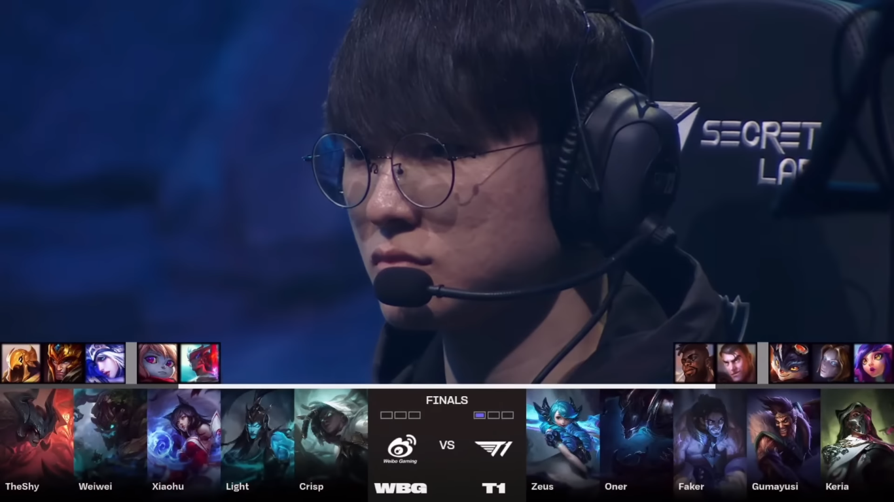
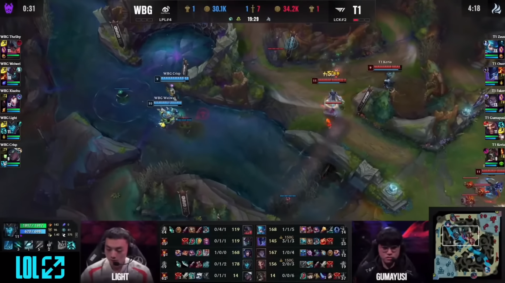
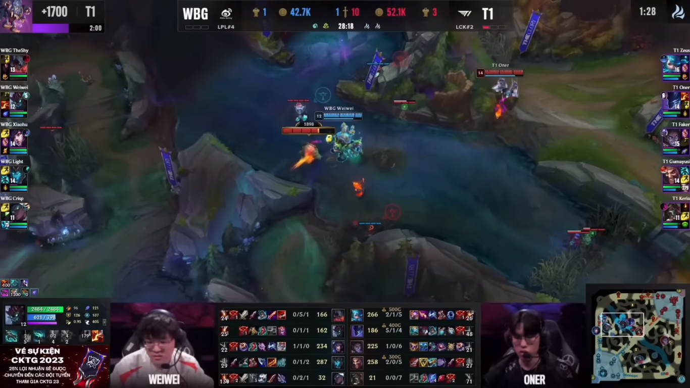
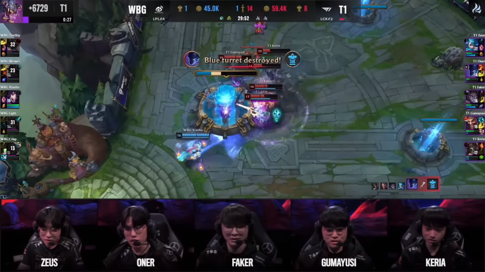

Trận đấu thứ hai cho thấy sự huỷ diệt của T1.
Sau khi qua lượt ban pick WBG với lựa chọn team xanh họ vẫn quyết định mang ra con bài hot power pick là Aatrox sau khi ăn hành bởi yone ở ván 1 nhưng cặp top lane giờ đã khác Zeus lôi con bài Gwen để đi với Aatrox nhưng lần này Zeus đã khác những lần xử lý kèo này trong quá khứ.

Đầu game cũng không có nhiều đột biến nhưng đến phút 20 có một pha combat khiến T1 đem về lợi thế cho mình.

sau một pha combat và tận dụng tốt bùa lợi baron T1 vươn lên dẫn trước hoàn toàn

Sau đó T1 dễ dàng dành chiến thắng ở phút 30.

Xem ván đấu cuối tại đây